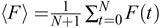

Imaging the activity of neurons and muscles*
View/Add Comments
Table of Contents
- 1. Introduction
- 2. Background and theory
- 3. Protocols
-
- 3.1. Reagents for cameleon imaging
- 3.2. Equipment for cameleon imaging
- 3.3. Software for cameleon imaging
- 3.4. Protocol 1: Recording serotonin-stimulated pharyngeal calcium transients
- 3.5. Protocol 2: Recording gentle touch neurons' touch response
- 3.6. Protocol 3: Recording amphid sensory neuron ASH's glycerol response
- 3.7. Protocol 4: Analysis of cameleon ratio data
- 4. References
Abstract
Optical methods provide a noninvasive way to monitor the activity of neurons and muscles in C. elegans. Although optical techniques are of use in many experimental systems, they are of particular interest for C. elegans researchers. Worms are optically transparent, and thus can be imaged while fully intact, and a variety of genetically encoded indicators are available which can be targeted to cells of interest with appropriate promoters. Optical calcium indicators appear to provide a good indirect measure of the activity of neurons and muscles. This chapter reviews the principles of operation of some common genetically encoded indicators, describes the microscopy equipment and image analysis needed to optically measure activity, discusses general principles and pitfalls of applying optical methods in biological samples, and finally gives example protocols for imaging calcium in specific muscles and neurons.
A variety of imaging techniques exist to monitor the activity of living cells. Perhaps the most common technique is the use of small molecule calcium dyes as an indirect indicator of neuronal activity. However, these dyes can be difficult to apply in intact worms due to the challenges of injecting or otherwise labeling the cells of interest. Fortunately, genetically encoded calcium indicators built from GFP variants and calcium binding proteins have been developed, allowing precise targeting of the indicator using the wide variety of tissue-specific promoters known in C. elegans.
Calcium imaging has been used to monitor the activity and signaling of a variety of cell types in C. elegans. Calcium is a key signaling molecule in excitation-contraction coupling in muscles, so calcium is a good indicator of physiologically relevent muscle activity. In C. elegans, calcium imaging has been used to study the activity and calcium signaling in the pharyngeal muscle (Kerr et al., 2000; Shimozono et al., 2004), vulval muscles (Shyn et al., 2003), and body wall muscles. Neurons are not guaranteed to have large calcium transients when electrically active, although voltage-gated calcium channels are commonly found in neurons. C. elegans does not appear to have voltage-gated sodium channels, suggesting that any active propagation of current in worms occurs via calcium spikes. Calcium imaging has been used as an indicator of neuronal activity in gentle touch neurons (Suzuki et al., 2003), in the chemoavoidance neuron ASH (Hilliard et al., 2005; Kahn-Kirby et al., 2004), and the thermosensory neuron AFD (Kimura et al., 2004). Other cell types also use calcium for signaling. For example, calcium oscillations involved in the defecation cycle have been imaged in intestinal cells (Dal Santo et al., 1999). Thus, calcium imaging appears to be a broadly applicable method for monitoring cellular activity in C. elegans.
Here, the basic principles of operation of fluorescent indicators are explained, and protocols are described for recording calcium transients in C. elegans muscle and neurons using the cameleon indicator. Much of the material is general in nature and should be readily applicable to imaging experiments in other tissues and with other indicators.
The optical techniques described here are based on fluorescence. A fluorescent molecule in its ground state can absorb a photon of the correct energy to send it into a singlet excited state (typically including extra vibrational energy). Any surplus vibrational energy is quickly lost in collisions with surrounding molecules (within picoseconds); the molecule then decays from the singlet excited state back to the ground state (plus vibrational energy which is again quickly lost) over a few nanoseconds. One of the primary modes of decay involves emitting a second photon—this process is called fluorescence. Since some of the first photon's energy is converted to vibrations (heat), the second emitted photon typically has less energy than the first, and thus a longer wavelength. Fluorescent molecules are characterized by their excitation spectrum, which measures the relative affinity of absorbing a photon as a function of wavelength, and by their emission spectrum, which measures the relative probability of emitting a photon at each wavelength. Another important characteristic of fluorescent molecules is their quantum yield, which measures the fraction of the time that an absorbed photon gives rise to an emitted photon.
In most microscopy applications, filters are used to apply light at wavelengths around the peak of the excitation spectrum and to select light at wavelengths around the peak of the emission spectrum. Since these two peaks are separated, fluorescence can be an extremely sensitive technique: if there are no fluorescent compounds aside from the ones you are interested in, a fluorescently-labeled object shows up brightly against a very dark background. Fluorescent molecules of different types do not interact with each other unless there are two fluorophors extremely close to one another (no more than a few nanometers apart). In that case, there is a new mode of decay for an excited-state “donor” fluorophor if its emission spectrum that overlaps with the excitation spectrum of a nearby “acceptor” fluorophor. The donor fluorophor can transfer its excited state energy directly to the acceptor, leaving the donor in its ground state and the acceptor in its excited state. This process is called fluorescence resonance energy transfer (FRET).
Fluorescent indicators work by coupling a biological process of interest to a change in fluorescence. Typically, these work in one of three ways. First, the coupling can change the quantum yield or the excitability of the fluorescent molecule, causing a change in the intensity of fluorescence. Second, the coupling can shift the excitation and/or emission spectra of the fluorescent molecule. Third, the coupling can cause changes in FRET between a donor and acceptor fluorophor.
Each of these principles has been used to create small molecule indicators, but small molecule indicators can be difficult to apply to C. elegans due to the cuticle. Protein-based indicators are typically built from fluorescent proteins such as GFP and from functional domains of proteins that respond to the signal that the indicator is supposed to detect. Because of this, protein-based indicators typically alter their intensity by using conformational changes either to change the environment of the GFP chromophore and alter its quantum yield or excitability, or to change the spacing and orientation of two fluorescent proteins, altering the level of FRET between them. FRET changes are most easily detected as a decrease in intensity of the donor and increase in intensity of the acceptor (or vice versa).
Fluorescent indicators have three serious drawbacks when used in a biological context. First, most fluorophors, including all currently available fluorescent proteins, can decay from the excited state by destroying the fluorophor. This process is called photobleaching. Photobleaching limits the total number of photons that a single fluorescent molecule can emit. Typically, the quantum yield of photobleaching is 105 − 106 times smaller than the quantum yield of fluorescence, so typical fluorophors can emit a few hundred thousand photons before being destroyed. Second, excited fluorophors often create reactive chemical species in their vicinity; these species can cause damage to surrounding molecules and thus be toxic to the cell or inactivate nearby proteins. This process is normally undesirable, but has been used to target the destruction of labeled proteins or their binding partners, a technique called chromophore assisted light inactivation (Jay, 1988). Third, fluorescent indicators bind to or interact with the molecules that they detect, so indicators can act as buffers and compete with natural targets. Expression of indicators, especially at very high levels, can therefore change the biological processes being studied.
Genetically encoded calcium indicators (GECIs) are fluorescent indicators that are responsive to calcium and built entirely from proteins. Because they are entirely protein-based, these indicators can be expressed in a tissue of interest with an appropriate promoter. Note, however, that good expression is not guaranteed—GECIs are often constructed with mammalian codon bias and typically contain long coding regions unbroken by introns, two factors which can reduce expression levels in C. elegans.
GECIs come in two major classes. The FRET-based indicators (cameleons) use the conformational change caused by binding of calcium to calmodulin to alter the distance between and relative orientation of CFP and YFP and thereby alter the degree of energy transfer between them (Miyawaki et al., 1997, 1999; Nagai et al., 2004). An indicator based on troponin C instead of calmodulin has also been developed (Heim and Griesbeck, 2004), which may be preferable in tissues where calmodulin plays a critical signaling role. In either case, binding of calcium increases FRET, which is conveniently measured by calculating the ratio of YFP emission to CFP emission— this ratio rises in the presence of calcium. The advantage of a ratiometric readout is insensitivity to changes in illumination intensity: altered illumination levels will scale both CFP and YFP intensity by a common factor, and that factor will cancel out when the ratio is calculated. Unstable light sources or motion of the sample through a nonuniformly illuminated field of view are two common sources of altered illumination. The disadvantage of a ratiometric readout is that it requires special hardware to simultaneously monitor both CFP and YFP channels at the same time.
The non-FRET indicators (GCaMP, camgaroo, and pericam) are also based on conformational change of calmodulin, but these alter the environment of the chromophore of a single GFP variant. This typically alters the brightness of the indicator (Baird et al., 1999; Nakai et al., 2001; Nagai et al., 2001; Griesbeck et al., 2001). These indicators typically have a greater dynamic range than the cameleons, and some have the advantage that cells with low calcium are dim and therefore do not greatly obscure the measurement of neighboring cells where calcium is high. Save for ratio pericam (Nagai et al., 2001), these indicators are based on a single intensity measurement, rendering them more prone to artifacts, but simplifying the hardware required.
Although the kinetics of these indicators have not been carefully studied, one report indicates that fast calcium transients are too brief to detect with the non-FRET indicators (Pologruto et al., 2004). A more exhaustive survey of neuronal activity indicators in Drosophila indicates that many are suitable to detect calcium transients in presynaptic boutons caused by a relatively strong stimulation (Reiff et al., 2005), but this report does not directly address the visiblity of brief calcium transients. At the time when this document was produced, there were no detailed comparisons between GECIs in C. elegans, but calcium transients as brief as tens of milliseconds have been observed using cameleon (Suzuki et al., 2003).
Calcium indicators are not the only genetically encoded fluorescent indicators that can be used to monitor neuronal activity. For example, a synaptically-targeted pH-sensitive indicator, synapto-pHluorin, has been used to monitor release of synaptic vesicles (Miesenböck et al., 1998). These indicators will not be considered further here, but protocols for using them should be similar to those for calcium indicators.
Standard fluorescence microscopes contain a light source, filters, and a detector. The most common light sources are mercury arc lamps and xenon arc lamps, both of which put out a high intensity of light at a broad range of wavelengths. However, the intensity from these lamps may fluctuate, making it difficult to resolve small intensity-based signals. Also, the lamps may not give uniform illumination from day to day (and they certainly do not over the lifetime of the mercury or xenon bulbs that are used). For typical applications, small transient fluctuations and long-term variability will not affect results. In experiments where modest differences in absolute levels of fluorescence are important, one should normalize by the illumination intensity. One can purchase highly uniform fluorescent beads and measure the intensity of a sample of these beads at the beginning and/or end of each recording session. The apparent intensity of the beads can be used to normalize the signals. Note that changing excitation filters, objectives, apertures, neutral density filters, and so on, all will change the illumination intensity.
If transient fluctuations in intensity are a problem, a tungsten (halogen) lamp can often be used instead of a mercury or xenon arc lamp. Tungsten lamps tend to be more stable, but they emit little light at shorter wavelengths. Lasers are another common light source with their own sets of problems and advantages that vary depending on the type of laser; these issues will not be considered here, but it is helpful to know the characteristics of one's light source so that artifacts that are induced by the illumination will not be mistaken for biologically meaningful signals.
Conventional fluorescence microscopes typically contain three filter elements for each fluorophor one wishes to image: an excitation filter, a dichroic, and an emission filter. Light from the light source is passed through the excitation filter, a bandpass interference filter selected to pass light near or at the peak of the excitation spectrum of the fluorophor. Typically, microscopes are designed to use dichroic mirrors that reflect short wavelengths and pass longer ones, and the dichroic mirror is thus chosen so that the excitation light is reflected and the emitted light passes through to the emission filter. Optimal emission filters span as much of the emission spectrum of the fluorophor of interest while excluding all excitation light and as much of the spectra as possible of any other fluorophores that may be present that you do not wish to image.
Ratiometric imaging requires an additional dichroic and two emission filters in place of the usual single emission filter. After passing through the primary dichroic, emitted light is first split by additional dichroic into donor emission and acceptor emission channels; these are then passed through appropriate emission filters to isolate the donor and acceptor signals. For some applications, one can instead switch filter sets back and forth between those for the donor and those for the emitter. However, this switching process is typically too slow for imaging calcium transients in neurons and muscles. Therefore, one needs a system that will simultaneously capture both channels at once. If you include a reference fluorophor with an intensity-based indicator (for example, by expressing mRFP along with GCaMP in a cell), then the ideal filter set would be one where both fluorophors appear similarly bright in the tissue. If one is vastly dimmer than the other, the dim one will contribute a lot of noise to any ratio of intensities. It may be easier to adjust the expression levels than to craft an ideal filter set.
CCD cameras are the detector of choice for widefield fluorescence illumination. The best back-thinned CCD cameras have quantum efficiencies in the range of 0.9–0.95, meaning that 90% to 95% of the incident photons are converted into electrons that the camera can read out. Less expensive cameras tend to achieve quantum efficiencies from 0.4 to 0.6. There are some inexpensive high-speed cameras with much lower quantum efficiencies, but these are unsuitable for fluorescence imaging as they are not sensitive enough. A camera used for imaging calcium transients should be able to acquire images at a minimum of 10 frames per second—more if the transients are especially brief (for example, in rapid pharyngeal pumping or the neuronal response to a quick mechanical stimulation). Most cameras have a binning feature that lets the user increase frame rate at the expense of resolution. For imaging of activity, this is very helpful as the goal is not to take pretty pictures of the cell but rather to rapidly and accurately monitor the fluorescence changes in that cell. The resolution need only be high enough to clearly and cleanly distinguish one cell from another.
CCD cameras are generally not used for scanning techniques such as confocal and two-photon microscopy. These techniques will not be considered here, but note that the primary advantage of these techniques—optical sectioning—is often not necessary in C. elegans if a good cell-specific promoter is used. Also, scanning techniques tend to use noisier detectors with less dynamic range. Thus, while these techniques can be essential for imaging activity inside vertebrate brain slices, they are often inferior for imaging of activity in C. elegans.
It is important to stay within the dynamic range of the detector. CCD Cameras typically have 12 to 16 bit readouts, which corresponds to allowable pixel values of 0–4095 to 0–65535. Recordings in which the cell(s) of interest show pixels with values at the top end of the range should be discarded—the data has been truncated, and the camera readout is no longer an accurate reflection of the emitted fluorescence. On the other hand, if the sample is too dim (e.g., pixel values from 10–20), roundoff error can become significant. Thus, it is preferable to adjust the light intensity and/or the exposure time so that the sample is comfortably within the camera's range. Additionally, overly bright illumination can cause photobleaching or alter the worm's behavior, but if the illumination is too dim, there may be too much noise in the recording to distinguish signals. It can take some time to optimize illumination levels and exposure times, but doing so can be the key to generating good-quality recordings.
The result of an imaging experiment is a series of fluorescence images where the signal of interest is a modulation in the intensity (or ratio of intensities) of fluorescence in a cell of interest. To extract this signal, one needs software to compute, for each image, the average pixel value inside a region of interest drawn around the cell of interest. It is best to make the region slightly larger than the cell (but not so large that it contains other fluorescent objects).
If the sample moves (and it typically will), you may need to have the region track the cell as it moves around. Unfortunately, most commercial programs assume that the sample is motionless. Also, if the cell of interest consists of only a few pixels (a cell that only illuminates a 4x6 area of pixels is not uncommon), the region ought not jump a full pixel at a time as it tries to track the cell around, since the jump will cause a switch between favoring one side of the cell to favoring the other. Either upsample the image to a higher resolution or use software that can move a region a fraction of a pixel. The author wrote custom software that does the latter, but the former may be more convenient with commercially available software.
The measured average pixel value for the cell of interest, Fmeas, includes both fluorescence from the sample as well as background fluorescence from other sources. Thus, it is useful to compute the background fluorescence Fbkg (the average pixel value inside a region of interest where there is no expressed indicator) for each frame. An estimate of the fluorescence given by the indicator in your cell of interest is then F = Fmeas − Fbkg, the average pixel value for the cell of interest minus the average background value. In the case where a cell is over other fluorescent objects (e.g., it is above the gut), simply choosing a nice dark region of the image is insufficient—this will compensate for general background fluorescence but not the extra fluorescence from the other fluorescent objects. If this interference cannot be avoided, choose a ring-shaped region completely outside of but near to the cell of interest and use this to determine the background. Make sure that the background region is as large as possible while being representative of the background conditions in which the sample finds itself–the background is dim, and therefore noisy. This noise will be added to your measurement noise, so reduce it by averaging as many pixels as possible. In the worst case, your cell may be moving back and forth over objects that create different backgrounds. If this cannot be avoided, you can compensate to some extent by having the background region move along with the object.
When analyzing optical or other quantitative data, the key quantity to consider is the signal to noise ratio (SNR). With most cameras for fluorescence microscopy, the primary source of noise is photon shot noise—random fluctuations in the number of photons captured and read out by the camera. In some cases, noise from dark current and the A/D converter can also be significant (generally with very long exposure times and very low intensities, respectively). Photon shot noise scales as the square root of the intensity. Thus, if photon shot noise is the primary source of noise, the signal will scale as intensity and the noise as the square root of intensity, so the SNR will scale as one over the square root of intensity. Put another way, this means that you need to increase the amount of detected light by a factor of 4 to gain a factor of 2 in signal to noise ratio. Thus it is often not cost effective to use outstanding equipment instead of merely good equipment (for example, one might use a CCD camera with 0.6 QE instead of 0.9 and use the best available standard filter sets instead of ones customized perfectly for the application).
To estimate the noise in a series of fluorescence measurements F(t), from t = 0 to t = N, one can compute
{kind=link}
This formula can often be used to estimate the noise even in recordings that show activity if the timepoint-to-timepoint change caused by signals and slow trends is small compared to the timepoint-to-timepoint noise. One can also calculate the average fluorescence . The ratio 〈F〉/η is a useful measure of SNR if one is trying to improve the quality of recordings.
{kind=link}
Fluorescence records are typically plotted as ΔF/F0, where F0 is an average baseline value of fluorescence before any stimulus or activity. The reason for this is that typically, the signal will cause a certain fraction of the indicators to change fluorescence rather than a constant number of them. This may not be true if there is so much indicator that it is consuming all of the signal. For example, very high concentrations of calcium indicators can soak up all calcium that enters a cell, which yields a constant change ΔF regardless of the baseline value F0. In general, this is undesirable, as it also means that the indicator is likely disrupting important biological processes. If one measures a bunch of signals ΔF with baselines F0, and normalizes both values by the illumination intensity, one should see scattered points with a constant slope–in this case, ΔF/F0 is the appropriate measure. If ΔF levels off at high F0 values—which corresponds to high expression levels—one should consider only using samples that do not express the indicator at that high a level.
For ratiometric indicators, one needs to measure the average pixel value for each channel (donor and acceptor), and divide acceptor by donor. Instead of ΔF/F0, the value of interest is typically ΔR/R0, the ratio change divided by the baseline ratio. Note that computing the ratio first, pixel by pixel, and then finding the average ratio over the object is not the same as computing the average intensity and then computing the ratio. The former unfairly weights uninformative and noisy low-intensity pixels. Ratioing pixel-by-pixel is useful to produce instructive and colorful images, but use average intensities for data analysis. A weighted average ratio, where the ratioed pixel is weighted in proportion to its total intensity, is pretty close to a ratio of average intensities, so this may be used if necessary. Also, it is important that the regions used to measure the intensity correspond to the same part of the sample in each channel. It is particularly bad if a region of interest moves on one channel but not on the other—this can introduce an artificial jump in the ratio.
FRET-based indicators such as cameleon have the property that as one channel gets brighter, the other gets dimmer. Thus, if the sample is sufficiently well-behaved and the intensities are stable, an event that causes an increase in ΔR/R should be accompanied by an increase in acceptor fluorescence and a decrease in donor fluorescence. Since many factors can affect the intensity, not every change of ΔR/R will necessarily be clearly visible in the acceptor and donor channels, but the presence of a reciprocal change helps to verify that a change in fluorescence ratio is caused by a biological event of interest rather than some artifact.
Some donor-acceptor pairs cannot be completely separated by filters. For example, with cameleon, the yellow channel also picks up fluorescence from CFP (this is to be expected, given the long tail on the emission spectrum of fluorescent proteins). If you have access to purified CFP or a CFP-expressing sample, you can compute the bleedthrough ratio by imaging CFP alone and setting RCFP = YCFP/CCFP (here, Y and C refer to the intensities measured in the yellow and cyan channel respectively). The apparent ratio of a cameleon-expressing cell Rapp is thus (YYFP + YCFP)/CCFP. To find the ratio of YFP to CFP, which is what one really wants, one computes R = Rapp − RCFP.
Fluorescence microscopy conditions may change a worm's behavior. In particular, the worms are typically immersed in fluid instead of being in air, which may elicit swimming rather than crawling behavior; being mired in glue is bad for a worm's health; and exposure to intense fluorescent light (and associated heat) can be noxious. Any behavioral assay required for the imaging experiment should be repeated under microscopy conditions to verify that it still works well enough (although note that some neurons may still be active even if the motor activity of the behavior is suppressed). In particular, the author has observed that overly intense fluorescent light inhibits pharyngeal pumping in worms expressing cameleon in the pharynx, and that initial application of fluorescence to worms expressing cameleon in ASH evokes activity in ASH (although later applications do not).
Water immersion objectives are good for obtaining high-quality images, especially in an upright scope where there is only solution between the worm and the objective. Imaging through a cover slip with an oil immersion lens is fine also. Although one may wish to use air immersion lenses to try to make conditions more similar to those in behavioral experiments, air immersion lenses tend to suffer from distortion at the worm's cuticle. However, for large structures they may be perfectly adequate. Keep in mind that your sample will dry out while exposed to the air, though larger, thicker pads and high humidity can reduce drying.
A variety of salt solutions are suitable for imaging. The author's experience is that worms survive longer in the imaging buffer specified below, but that other solutions can also give reasonable results. If you need to use a different buffer—for example, if you're conducting a chemosensory experiment—it is worthwhile to see how long lightly glued worms stay active and moving on a slide; carefully glued worms in imaging buffer can at least be prodded to activity for four or five hours. Also, keep in mind that altering the buffer may affect the polymerization of glue used to hold the animal in place.
Because of the potential sources of imaging artifacts, it is valuable to have a negative imaging control. For example, a calcium-insensitive analogue of a calcium indicator can be used to demonstrate that signals are actually caused by calcium influx as opposed to some unidentified artifact. Alternatively, experiments can be performed on worms with the tissue of interest inactivated or nonresponsive to the stimulus of interest (e.g., mec-4 mutants in a gentle touch experiment). These controls are not always necessary—in calcium imaging experiments, the rapid rise followed by a slow decay is often a sufficiently unique signature to be confident that a signal is a calcium transient rather than an artifact. However, controls are useful in more questionable cases. In addition, expression of the indicator may have unexpected effects on the behavior or mutant phenotype one is studying, so indicator-expressing animals should be used as controls in related non-imaging experiments.
If you are providing a stimulus to your worm, it may be difficult to synchronize image acquisition with the delivery of the stimulus. To mark the time of a stimulus delivery, one can use a flash of light from an appropriately colored LED at a defined time before the stimulus. A properly located LED will produce a characteristic blip in the background intensity which can be used as a reference mark for your stimulus. Deliver the flash before the stimulus so it doesn't obscure the onset of your stimulus. It is better if you can drive your stimulus from your image acquistion program, or have the image acquistion program set a mark based on an external trigger that is tied to your stimulus, but the LED flash method works well when other options are unavailable.
Photobleaching affects all the indicators mentioned here. The ratiometric indicators may show smaller ratio changes than expected once some of the acceptor fluorophores have bleached, and even nonratiometric indicators may be damaged by reactive species produced by the fluorophors. Since photobleaching can have biologically deleterious effects as well, it is advisable to discard samples once modest photobleaching has occurred (~10%). The best way to deal with photobleaching is to avoid it—use less light if possible. If photobleaching cannot be avoided, at least structure the experiment such that any comparisons that are made do not have a systematic bias towards bleached or unbleashed samples. For example, to study adaptation in a significantly bleached sample, one should compare mock training/test stimulus controls to real training/test stimulus experimental animals instead of comparing a test stimulus at the beginning of imaging to a test stimulus at the end.
For calcium imaging in particular, to a first approximation, ΔR/R (or ΔF/F) reflects the total calcium that has entered a cell. Therefore, turning on a constant calcium current should lead to a linear increase in total calcium, and therefore a linear increase in ΔR/R. When the current is turned off, slower calcium removal processes become apparent, and ΔR/R should relax back to the baseline gradually. Thus, single isolated calcium transients tend to produce a signature change in ΔR/R: an approximately linear rise, followed by an exponential-like decay. Motion and changes in focus can also change ΔR/R, but these rarely occur in this characteristic shape. If the sample undergoes significant motion, it can be useful to plot position or velocity along with ΔR/R to see if the changes could be explained by motion.
Measurements of ΔR/R do not distinguish between long, slowly rising events and fast, rapidly rising events. Thus, it is also useful to measure the duration Δt of an event (e.g., from start to peak). The author is aware of mutations that affect only the duration, Δt; only the slope, (ΔR/R)/Δt; both in the same direction; and both in opposite directions. Since the duration Δt reflects the duration of the event, while the slope is a measure of the rate of calcium entry, the biological interpretation of the two effects is different.
It is not easy to convert from ΔR/R to calcium concentration. Thus, calcium imaging is not, typically, a good way to measure small changes in baseline calcium concentration. However, with proper background subtraction and correction for CFP bleedthrough, the size of transients measured as ΔR/R is reproducible between different microscopes and cameras (although it is always best to have a set of validation data to check).
-
Transgenic worms expressing cameleon in the tissue of interest. The line does not need to be integrated. Preparation of transgenic lines is described in (Mello and Fire, 1995).
-
Imaging bath solution: NaCl 80 mM, KCl 5 mM, D-glucose 20 mM, Hepes 10 mM, MgCl2 5 mM, CaCl2 1 mM; pH adjusted with NaOH to 7.2 and osmolarity adjusted with sucrose to 320 mOsm. This was modifed from the extracellular saline described in (Lockery and Goodman, 1998); the original formulation works well also.
-
High melting point agarose.
-
Nexaband S/C glue (available from Fisher). Other formulations of glue may also be labeled with the Nexaband brand; the active ingredient in Nexaband S/C is 2-octyl cyanoacrylate (not n-butyl cyanoacrylic).
-
Gluing needles. Pull a standard borosilicate capillary tube leaving an open tip of ~50μm using a Flaming/Brown micropipette puller (Sutter Instruments). If a programmable micropipette puller is unavailable, tips can be broken to size, or the capillary tube can even be pulled by hand.
-
Serotonin imaging bath. Same as imaging bath, but add 1.0 mg/mL 5-hydroxytryptamine (5-HT) (Protocol 1 only).
-
Glycerol stimulation solution. Same as imaging bath, but add glycerol to 1.0 M (Protocol 3 only).
-
Heat block at 65°C.
-
Pad-making station. Tape down two microscope slides side by side with just enough room to fit a third slide in between. Add additional layers of tape to define the desired height of the pad.
-
Flat-sided clear cold block. A flatsided Falcon flask filled with water and placed in an ice bucket is suitable.
-
Hair pick. Tape or glue an eyelash to a toothpick or small stick.
-
Mouthpressure glue applicator. Take an arm's length of 1/8″ inner diameter Tygon tubing. Insert a 2cm length of 1/16″ inner diameter, 1/16″ wall thickness Tygon tubing in one end to hold a gluing needle. Insert a clean and sterile 200μL pipette tip in the other end. Filter tips can prevent unintentional salivation from soiling the tubing.
-
Upright fluorescence microscope with a 40x or 63x water immersion objective.
-
Emission splitter: Dual View from Optical Insights or W-View from Hamamatsu. These place YFP and CFP images side by side on a single CCD camera.
-
Filters: 420/40 CFP excitation filter and 455 excitation dichroic for the microscope (no emission filter); 480/30 CFP emission filter, 505 emission dichroic and 535/30 YFP emission filter for the emission splitter. Suitable filters are available from Chroma and Semrock, among others.
-
High-speed, low-noise camera, such as the Hamamatsu ORCA ER (or equivalent).
-
Miniature motorized stage with programmable controller such as the Polytech PI M-111.1DG. (Protocols 2 and 3; Protocol 2 requires a higher quality device than Protocol 3.)
-
Micromanipulator capable of positioning the miniature stage. This can be bought as a unit or built from small single-axis manual stages such as the Newport TSX-1D (Protocols 2 and 3).
-
Perfusion chamber such as Warner Instruments' RC-26GLP (Protocol 3).
-
Image acquistion software. MetaVue from Universal Imaging is adequate, as are many other packages.
-
Image analysis software. The author has written custom software to read MetaVue stack files. Image acquisition and analysis software is offered by many vendors and may be suitable.
-
Data analysis or statistics software. Matlab (The Mathworks) and its open source clone, Octave (www.octave.org), is the author's tools of choice for serious work, although more graphically-oriented software may be easier to learn.
-
Collect worms with sufficiently good expression of the indicator in the pharynx. If not all worms are suitable, a fluorescence dissecting scope is helpful, but worms can be picked off of any fluorescence microscope with a low-power air objective.
-
Suck a small amount of glue into the tip of a gluing needle using the glue applicator. The glue will not polymerize rapidly in air, so a single needle can last for hours.
-
Place 60–100 μL of molten 2% agarose in imaging bath solution with 1.0 mg/mL 5-HT onto a glass slide in the padmaking station. Place a second slide on top of the drop to create a pad approximately 1 mm thick and 8–12 mm in diameter.
-
Transfer one or more worms to the slide, being careful to minimize the amount of bacteria transferred. Wipe away excess bacteria, as it will prevent good adherence of the glue.
-
Place the slide on the cold block and wait until the worms have stopped moving. Reorient the worms using a hair pick as desired. Overexposure to cold may damage the worms, and excessive condensation will make gluing difficult.
-
Using the glue applicator, place a small drop of glue against the side of the worm's body close to the desired imaging location. Do not cover the worm's nose with glue or swamp the worm in glue; this is likely to kill the worm. Apply additional glue as needed; less glue results in a healthier worm, but worms may wriggle free.
-
Remove the slide from the cold block and blot away any condensation near the base of the pad.
-
Glue the pad to the slide using the glue applicator. Only a small amount of glue is needed to keep the pad from floating off the slide.
-
Cover the pad with a few drops of serotonin imaging bath solution and place a cover slip on top to keep the worms from drying out.
-
If necessary, adjust the image splitter so that the yellow and cyan channels are side-by-side and have the same field of view. Sharp edges, grids, and glass needle tips can be useful for alignment. It is usually easier to align at low magnification and with no binning.
-
Place the slide on the microscope stage and locate the worm with an air objective, then switch to a 40x or 63x water immersion objective.
-
Focus on the tissue of interest using transmitted light. If the worm is moving excessively, pulling free from the glue, or surrounded by air bubbles, abandon this worm and move on to the next one. If you have only one worm and it is very important, it may be possible to dry and re-glue the worm, but this is not recommended.
-
Refine the focus using fluorescence. Since the indicator will photobleach, it is good to minimize the time and intensity of exposure to fluorescence light. If the terminal bulb is obscured by gut autofluorescence, try to find a worm that hasn’t retracted its head so much as to push the terminal bulb that close to the gut.
-
Take a single fluorescence image using the image acquistion software. Adjust the position of the sample, the strength of neutral density filters, and the exposure time until all of the following conditions are met:
-
The sample is in the center of the field of view, or at least close enough to prevent it from leaving the field of view if the worm attempts to move.
-
The field of view contains an indicator-free region. This is necessary for background subtraction.
-
The camera is not saturated, and will not become saturated when the indicator is activated. For cameleon, this typically involves keeping the brightest pixel in the image at or below 50% of the maximum that the camera can handle.
-
The exposure time is fast enough to capture events of interest–at least twice as fast as the fastest event you care about, but 5x to 10x faster is preferable. If the timescale of the events is not known, try 100 ms initially. For the pharynx, pumping can occur at up to 3–4 Hz, so we pick 20–50 ms as the exposure time.
-
The illumination intensity is as low as possible while meeting the above constraints and leaving the tissue bright enough to collect data that is not too noisy. This typically must be determined with experience.
-
-
Set the exposure time and number of frames for the desired period of rapid imaging using stream transfer mode. If the stream is too large to acquire conveniently, increase the binning, increase the exposure time, or select a subregion of the full region to acquire. Note that you may have to readjust the fluorescence illumination intensity again to keep the camera from saturating.
-
Acquire the stream.
-
Skim through the acquired data to make sure that the sample stayed sufficiently in focus, did not saturate the camera, and did not photobleach excessively, and save the stream for further analysis if there are no obvious problems.
-
Set up the mechanical stimulator: mount the miniature stage to the micromanipulator so that the moving axis of the stage can be directed towards the sample.
-
Prepare worms for recording as above, but do not include 5-HT in the imaging buffer, and do not place a cover slip on top of the slide. Use worms expressing cameleon at a reasonable level in ALM.
-
When placing the worm on the microscope, use imaging buffer to immerse the water immersion objective.
-
After the worm is in position, use the micromanipulator to position the probe ~10μm from the side of the worm halfway between the ALM cell body and the head.
-
Set the stage controller to deliver a stimulus. For example, 20 μm forward motion, 100 ms pause, 20 μm backwards motion. Test once to make sure that the probe strikes the worm.
-
Set up for imaging as described for Protocol 1, setting the stream to last for at least 15 seconds and the exposure time for 40 ms.
-
Acquire the stream and activate the stage controller 5 s into stream acquisition. If the stage controller is not integrated into the imaging program, have the stage controller activate an LED to flash on the sample 500 ms before the stimulus is given.
-
Save the stream if there are no obvious problems—be particularly alert to problems caused by the mechanical stimulation itself.
-
Prepare worms for recording as in Protocol 1, but place the worms in the perfusion chamber and do not use a cover slip or 5-HT.
-
Set up a gravity-feed perfusion system to deliver 1.0 mL/min of imaging buffer through the perfusion chamber.
-
Set up a gravity-feed stimulus-delivery system using a gluing needle and imaging buffer with glycerol added to 1.0 M. The needle should deliver much less volume than the chamber perfusion system—20 μL/min is acceptable.
-
Position the micromanipulator and stage as in Protocol 2, but place the stimulus delivery needle at the worm's nose and have the direction of travel of the micromanipulator be downstream in the perfusion flow.
-
Program the stage to move 1000 μm forwards, pause for three seconds, and then 1000 μm backwards. Move the stage 1000 μm backwards to start, leaving the stimulus delivery needle away from the worm's nose.
-
Set up for imaging as described in Protocol 1, setting the stream to last for at least 15 seconds and the exposure time for 100 ms.
-
Turn on the flow of buffer into the perfusion chamber. Check the focus.
-
Acquire the stream; turn on the stimulus delivery flow immediately, and activate the stage to move after 5 s. Turn off the stimulus delivery flow as soon as the stage has moved away (at 8–9 s). As in Protocol 2, use a LED flash if the stage controller is not integrated into the image acquisition program.
-
Keep the bath perfusion on for 60 s to wash away any excess glycerol, then turn off the flow of buffer.
-
Save the stream if there are no obvious problems—be aware of any focus changes caused by the application of glycerol.
Image acquisition software often has data analysis capabilities. The necessary analysis steps are described here, and can be performed by numerous software packages, although doing so may not be fast or convenient. Inconvenience prompted the author to create custom software to streamline the data analysis process.
-
Select a region of the first image in the stream where there is no fluorescence. Compute the average intensity in that region for both the yellow and cyan channels. These are the background fluorescence intensities, Ybkg and Cbkg. If the background intensity varies over the course of the recording, and it typically does, you will need to measure the intensity for each image in the stream.
-
Select a region containing the cell(s) of interest. It is preferable to have a region slightly too large than too small, so that all of the fluorescence emitted from the cell is captured. However, do not let the region overlap with another fluorescent object. This region should cover exactly the same part of the sample on the yellow and cyan channels. If the two regions are misaligned, you may get unexpected results.
-
For each image in the stream, measure the average yellow and cyan fluorescence intensities from the cells of interest, Ymeas and Cmeas and compute the backgroundsubtracted (true) intensites, Y = Ymeas − Ybkg and C = Cmeas − Cbkg. It may be necessary to move the regions if the sample moves during the stream. Automatic tracking useful in this case. Make sure that the regions stay aligned with each other during tracking.
-
Compute the apparent fluorescence ratio Rapp = Y/C for each image.
-
Compute the fluorescence ratio corrected for CFP bleedthrough, R = Rapp − RCFP. Assume RCFP is 0.6 if you haven't measured it.
-
Save the list of corrected ratios for further analysis.
-
Using appropriate graphic or analysis software, identify events on the ratio trace R(t). Quantify the size of the event ΔR/R = (R(t2) − R(t1))/R(t1) where t1 is the time of the start of the event and t2 is the time of the peak of the event.
-
Compare events to expected sources of measurement error, such as rapid movement and focus changes, and exclude any questionable data.
Baird, G.S., Zacharias, D.A., and Tsien, R.Y. (1999). Circular permutation and receptor insertion within green fluorescent proteins. PNAS 96, 11241–11246. Abstract Article
Dal Santo, P., Logan, M.A., Chisholm, A.D., and Jorgensen, E.M. (1999). The inositol trisphosphate receptor regulates a 50 second behavioral rhythm in C. elegans. Cell 98, 757–767. Abstract Article
Griesbeck, O., Baird, G.S., Campbell, R.E., Zacharias, D.A., and Tsien, R.Y. (2001). Reducing the environmental sensitivity of yellow fluorescent protein. J. Biol. Chem. 276, 29188–29194. Abstract Article
Heim, N., and Griesbeck, O. (2004). Genetically encoded indicators of cellular calcium dynamics based on Troponin C and green fluorescent protein. J. Biol. Chem. 279, 14280–14286. Abstract Article
Hilliard, M.A., Apicella, A.J., Kerr, R., Suzuki, H., Bazzicalupo, P., and Schafer, W.R. (2005). In vivo imaging of C. elegans ASH neurons: cellular response and adaptation to chemical repellents. EMBO J. 24, 63–72. Abstract Article
Jay, D.G. (1988). Selective destruction of protein function by chromophore-assisted laser inactivation. PNAS 85, 5454–5458. Abstract
Kahn-Kirby, A.H., Dantzker, J.L. M., Apicella, A.J., Schafer, W.R., Browse, J., Bargmann, C.I., and Watts, J.L. (2004). Specific polyunsaturated fatty acids drive TRPV-dependent sensory signaling in vivo. Cell 119, 889–900. Abstract Article
Kerr, R., Lev-Ram, V., Baird, G., Vincent, P., Tsien, R.Y., and Schafer, W.R. (2000). Optical imaging of calcium transients in neurons and pharyngeal muscle of C. elegans. Neuron 26, 583–594. Abstract Article
Kimura, K.D., Miyawaki, A., Matsumoto, K., and Mori, I. (2004). The C. elegans thermosensory neuron AFD responds to warming. Curr. Biol. 14, 1291–1295. Abstract Article
Lockery, S.R., and Goodman, M.B. (1998). Tightseal wholecell patch clamping of C. elegans neurons. Methods Enzymol. 295, 201–217. Abstract
Mello, C.C., and Fire, A. (1995). DNA transformation. In: Methods in Cell Biology, Volume 48, Caenorhabditis elegans: Modern Biological Analysis of an Organism (Epstein, E.F., and Shakes, D.C., eds.), pp. 451–482. San Diego, CA: Academic Press.
Miesenböck, G., de Angelis, D.A., and Rothman, J.E. (1998). Visualizing secretion and synaptic transmission with pH-sensitive green fluorescent proteins. Nature 394, 192–195. Abstract Article
Miyawaki, A., Griesbeck, O., Heim, R., and Tsien, R.Y. (1999). Dynamic and quantitative Ca2+ measurements using improved cameleons. PNAS 96, 2135– 2140. Abstract Article
Miyawaki, A., Llopis, J., Heim, R., McCaffery, J.M., Adams, J.A., Ikura, M., and Tsien, R.Y. (1997). Fluorescent indicators for Ca2+ based on green fluorescent proteins and calmodulin. Nature 388, 882–887. Abstract Article
Nagai, T., Sawano, A., Park, E.S., and Miyawaki, A. (2001). Circularly permuted green fluorescent proteins engineered to sense Ca2+. PNAS 98, 3197–3202. Abstract Article
Nagai, T., Yamada, S., Tominaga, T., Ichikawa, M., and Miyawaki, A. (2004). Expanded dynamic range of fluorescent indicators for Ca2+ by circularly permuted yellow fluorescent proteins. PNAS 101, 10554–10559. Abstract Article
Nakai, J., Ohkura, M., and Imoto, K. (2001). A high signaltonoise Ca2+ probe composed of a single green fluorescent protein. Nat. Biotech. 19, 137–141. Abstract Article
Pologruto, T.A., Yasuda, R., and Svoboda, K. (2004). Monitoring neural activity and [Ca2+] with genetically encoded Ca2+ indicators. J. Neurosci. 24, 9572–9579. Abstract Article
Reiff, D.F., Ihring, A., Guerrero, G., Isacoff, E.Y., Joesch, M., Nakai, J., and Borst, A. (2005). In vivo performance of genetically encoded indicators of neural activity in flies. J. Neurosci. 25, 4766–4778. Abstract Article
Shimozono, S., Fukano, T., Kimura, K.D., Mori, I., Kirino, Y., and Miyawaki, A. (2004). Slow Ca2+ dynamics in pharyngeal muscles in Caenorhabditis elegans during fast pumping. EMBO Rep. 5, 521–526. Abstract Article
Shyn, S.I., Kerr, R., and Schafer, W.R. (2003). Serotonin and Go modulate functional states of neurons and muscles controlling C. elegans egg-laying behavior. Curr. Biol. 13, 1910–1915. Abstract Article
Suzuki, H., Kerr, R., Bianchi, L., FrokjaerJensen, C., Slone, D., Xue, J., Gerstbrein, B., Driscoll, M., and Schafer, W.R. (2003). In vivo imaging of C. elegans mechanosensory neurons demonstrates a specific role for the MEC4 channel in the process of gentle touch sensation. Neuron 39, 1005–1017. Abstract Article
*Edited by William Schafer. WormMethods editor, Victor Ambros. Last revised August 7, 2005. Published June 2, 2006. This chapter should be cited as: Kerr, R.A. Imaging the activity of neurons and muscles (June 2, 2006), WormBook, ed. The C. elegans Research Community, WormBook, doi/10.1895/wormbook.1.113.1, http://www.wormbook.org.
Copyright: © 2006 Rex A. Kerr. This is an open-access article distributed under the terms of the Creative Commons Attribution License, which permits unrestricted use, distribution, and reproduction in any medium, provided the original author and source are credited.
§To whom correspondence should be addressed. E-mail: rkerr@biomail.ucsd.edu
 All WormBook content, except where otherwise noted, is licensed under a Creative Commons Attribution License.
All WormBook content, except where otherwise noted, is licensed under a Creative Commons Attribution License.